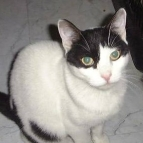
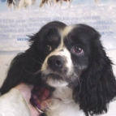
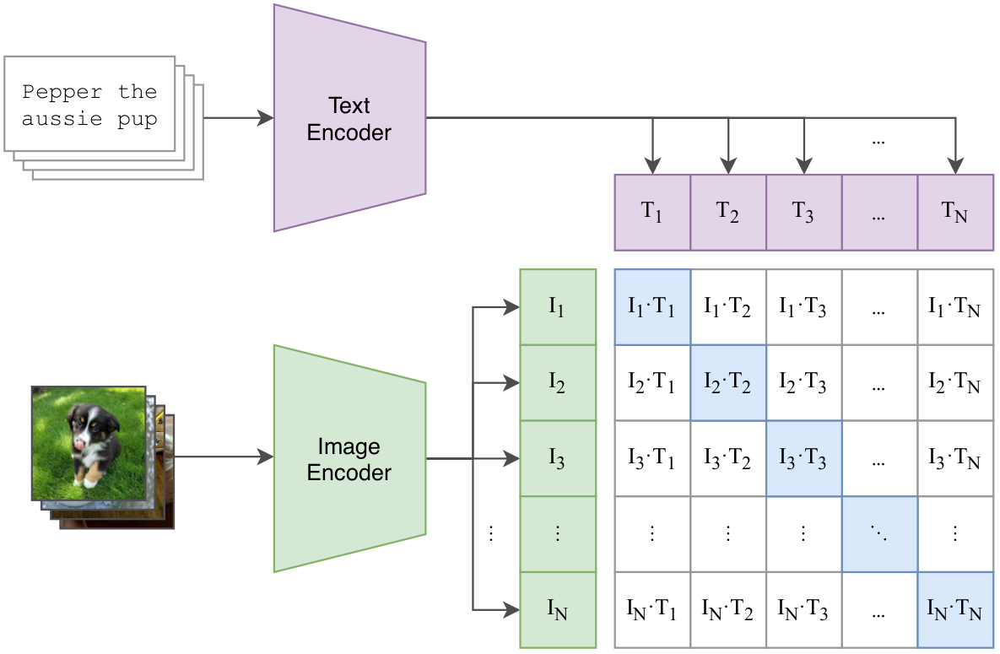
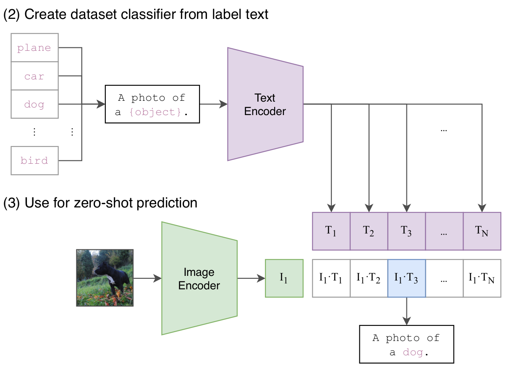

Pretraining on ImageNet1 dataset and finetuning on the downstream task has been the standard procedure in Computer Vision. Although such methods have shown great performance, they have some major limitations.
Firstly, creating high-quality annotations for millions of images is a difficult and expensive task. It would be better if we can utilize a large number of images available over the internet without careful annotation.
Secondly, the methods need to be modified whenever there is a change in the number of classes. Let’s say the model is petrained on ImageNet dataset and you need to use it on your dataset with different classes than that of ImageNet. In such a case, you need to change the model head and finetune it to match the downstream task.
Both of these limitations can be addressed if the model can use natural language supervision to learn the representations. We can have abundant data in (image, text) pairs and use this data to learn the representations that can be utilized for zero-shot transfer. CLIP2 by OpenAI is one such mechanism for training visual models using natural language. Since it enables zero-shot transfer, we need not be concerned with the number of classes in the downstream task.
In this post, we’ll discuss the method used in CLIP. The major achievement of CLIP is that it achieves zero-shot performance that is on par with supervised training.
Problem: Data annotation is expensive and transferring to the new dataset cannot be done without finetuning on the new dataset.
CLIP
CLIP model is trained using a large dataset that does not require data labeling as in Imagenet. Pretraining is done on a large number of (image, text) pairs. This enables zero-shot transfer as it is independent of the number of classes in the downstream task. The large dataset and pre-training approach are what make CLIP perform well in zero-shot transfer. We discuss them below.
Dataset
A new dataset of 400 million pairs of images and text is constructed. All those images contain natural language descriptions which are available over the internet. Manual annotation denoting the class present in the image is not required. Table 1 contains an example of a dataset containing 2 pairs of (image, text) where text is a natural language description of an image. You can imagine the amount of knowledge present in 400 million such pairs.
| Pair | Image Description | Image |
|---|---|---|
| Pair 1 | A white cat |  |
| Pair 2 | A black and white dog |  |
Method
Firstly, pretraining is done using contrastive setup and the pretrained model can be used for zero-shot transfer. Here I present an example of classification task. For other tasks and dataset, please refer to the paper2.
Pretraining
The pretraining phase is shown in Figure 1. It consists of a text encoder and an image encoder. In the paper, they experiment with variants of ResNet3 and ViT4 for image encoder and Transformer5 for text encoder. The motivation is to use natural language to guide vision representation learning. The text encoder processes the descriptions of images and the image encoder processes the images. Text and image representations are obtained from the text and the image encoder respectively. The objective is to make the representations of a pair of image and text close and the representations of image and text across different pairs to be different. Using the data given in Table 1, the pre-training objective would be to make the representation of the text A white cat and the cat's image as similar as possible. Similarly the representation of A black and white dog and the dog's image also should be as similar as possible. However, the representations between text and image of different pairs must be as dissimilar as possible. Contrastive Learning6 can be used to achieve this.
Make the representations of text and image in the same pair to be the same and different between text and image of different pairs.
Once this objective is achieved, the vision model will learn to produce features that are similar with to textual features. Here natural language is being used for supervision instead of image labels. The vision model pretrained in such a way can be used in zero-shot classification tasks.
Zero-shot transfer
Zero-shot transfer means using the model on the target dataset without showing any example from that dataset. Zero-shot transfer example is shown in Figure 2. The process can be described in the following steps:
Identify the classes to which the image should be classified (plane, car, dog…bird). These can be any class. However, you should be able to represent them using natural language.
Add prompts to these classes. In Figure 2, a prompt
A photo of ais used. Experiments have shown prompts to improve performance compared to contextless class names only.Pass the image to be classified through the image encoder and prompted class names through the text encoder. Get the representations of images and text.
Compute the cosine similarities between the representation of images and text. Identify the image of the classes with the highest similarity.
Here, it can be seen how a pre-trained model can be used in any dataset without using any image from the target dataset for finetuning.


Conclusion
We discussed how CLIP enables zero-shot transfer. This is quite a big achievement given it does not use any manual annotation in training and finetuning. Due to the effectiveness of such embeddings, CLIP-based models have been used in guiding Diffusion based models to generate images with natural language descriptions. CLIP is widely used in learning multi-modal embeddings.
Please feel free to post comments or open a pull request if you think any correction or addition needs to be made. Thank you for going through the post. I’ll see you in the next one. Bye!